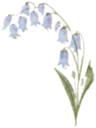

URBAN GREEN
SPACE
Home
Back

Name
Bluebell, known scientifically as “Hyacinthoides non-scripta”, belongs to Asparagaceae.
Features
Appearance: Bell-shaped, drooping flowers in clusters, typically deep blue or violet, with white and pink varieties. Scent: Sweet and fragrant, especially when in full bloom. Cultural significance: In folklore, bluebells are associated with humility and everlasting love. Season: Blooms in spring, typically from April to May.
Where I found it
I found bluebells at the Brooklyn Botanic Garden, specifically on the south side of the Cherry Esplanade.